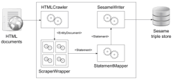

SemNet is a modular and extensible framework for building domain-specific semantic networks. The main purpose of SemNet is automated collection of unstructured or semi-structured data from web resources and their transformation into a machine readable representation – a semantic network.
Design
The system is composed of several modules, called object processors.  These processors are ordered sequentially to form a processing chain. Each processor has a specific role, it can be one of:
{kind=link}
- object source,
- object filter,
- object sink.
This simple data processing framework is called the Piped object processor and provides the flexibility in adjustment of processing of the acquired data. It is meant to resemble the functioning of the unix pipe. All processors run in separate threads and exchange Java objects using concurrent buffers. The API of POP is fully documented and offers methods for composition and lifecycle management of processing chains and processors.
There are four processors implemented as a part of SemNet:
- crawler,
- scraper(s),
- statement mapper,
- Sesame writer.
Crawler is configured by means of host descriptors and entity descriptors and is responsible for automated collection of data from web pages, according to the defined rules.
Scrapers perform extraction of information from collected data and transformation to predicates.
Statement mapper translates terms between the provisional vocabulary defined in the ontology-agnostic scrapers to the vocabulary of the network being built.
Sesame writer is an adapter for the Sesame triple store.
Platform
All modules of SemNet are written in Java, which ensures cross-platform operation.
SemNet depends on a number of libraries. The most prominent dependency is the Sesame library. In addition to the Sesame being used as a triple store, the model of Sesame is used for runtime encapsulation and manipulation of data.